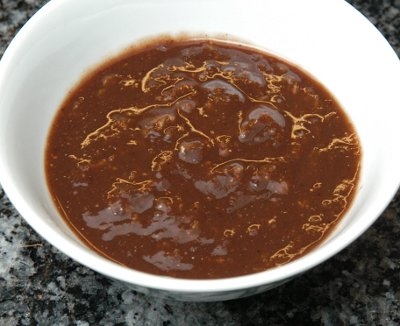

| Zutaten für 4 Personen: | |
| 1 EL | Tamarindenpaste |
| 2.5 EL | Wasser |
| wenig | Chilipulver |
| 1/2 KL | Ingwer, frisch gerieben |
| 1/2 KL | Salz |
| 1 KL | Zucker |
| 1 KL | fein geschnittene Korianderblätter |
Tamarindenpaste in eine Schüssel geben.
Wasser zugeben und langsam zu einer glatten, flüssigen Paste verquirlen.
Chilipulver zugeben, mischen.
Ingwer zugeben.
Mit Salz und Zucker würzen und gut mischen.
Fein geschnittene Korianderblätter als Dekoration darauf streuen.
Patricia Krummenacher, Indischer Kochkurs, 2006
Schmeckt richtig fein. RE 9.5.2010
@LINKBACK_TAG@ @WAKELOCK@